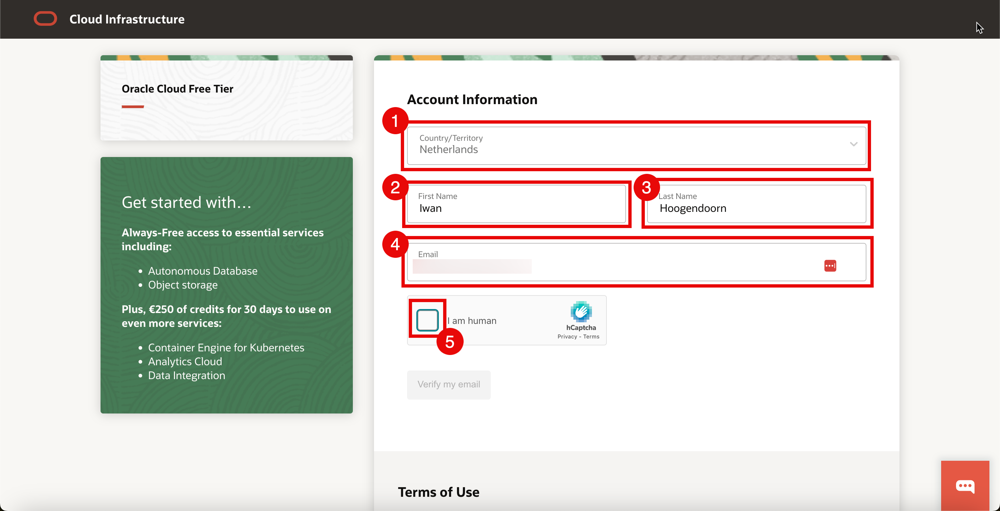
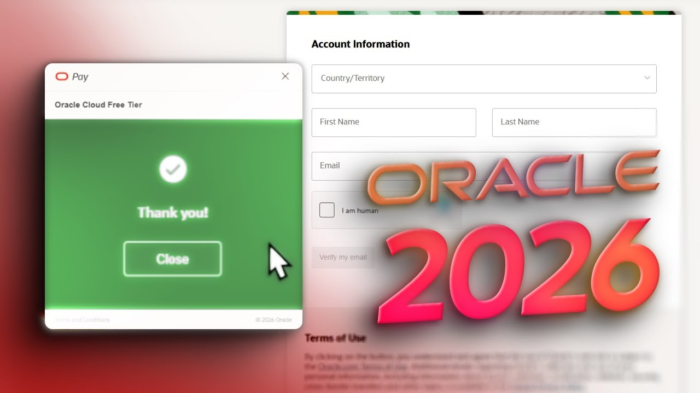
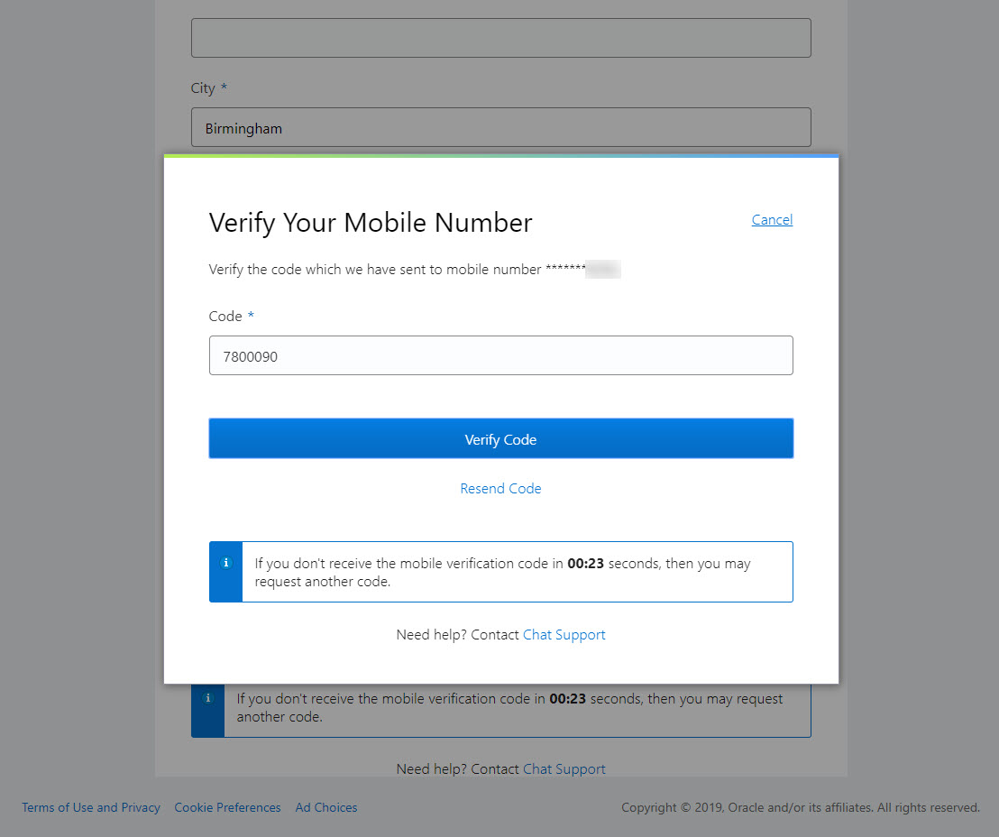
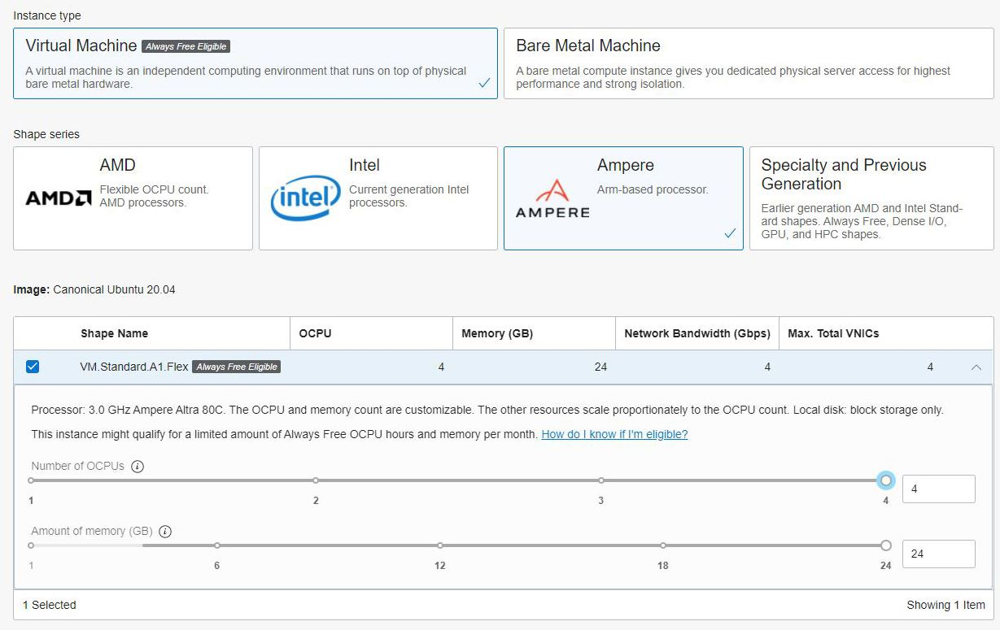
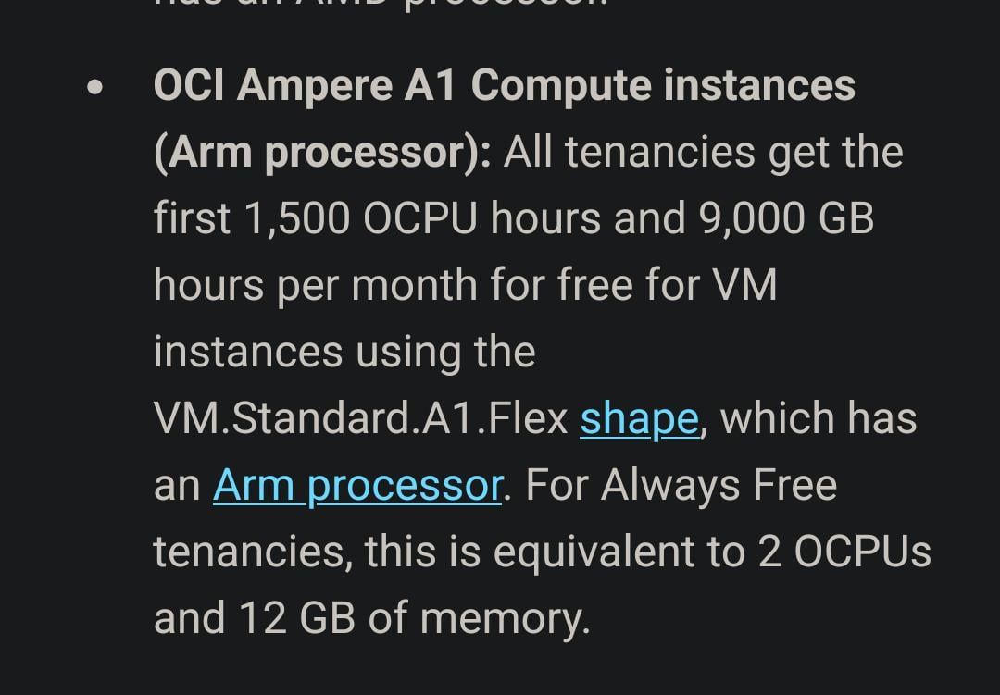
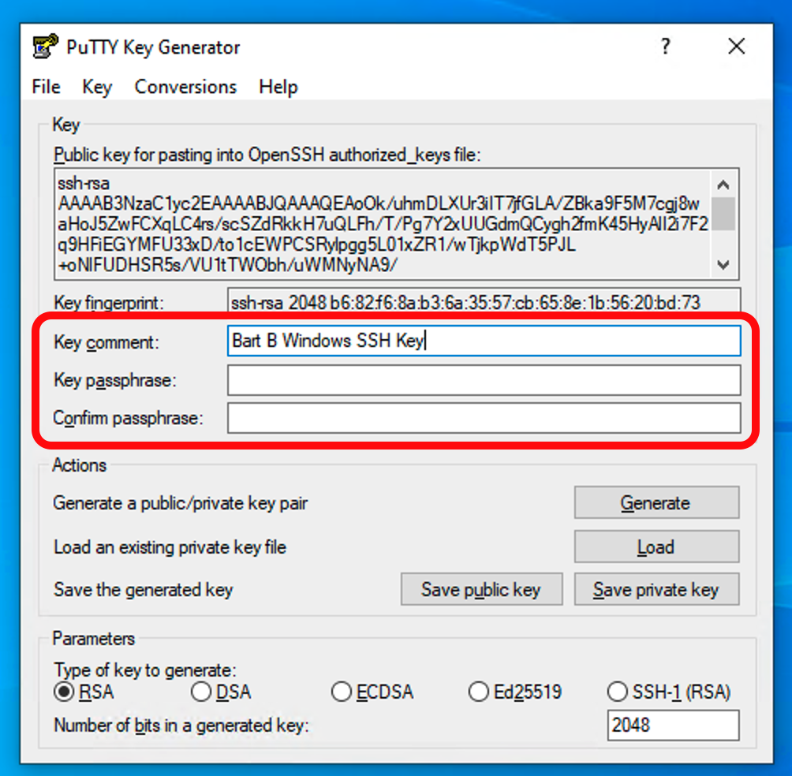
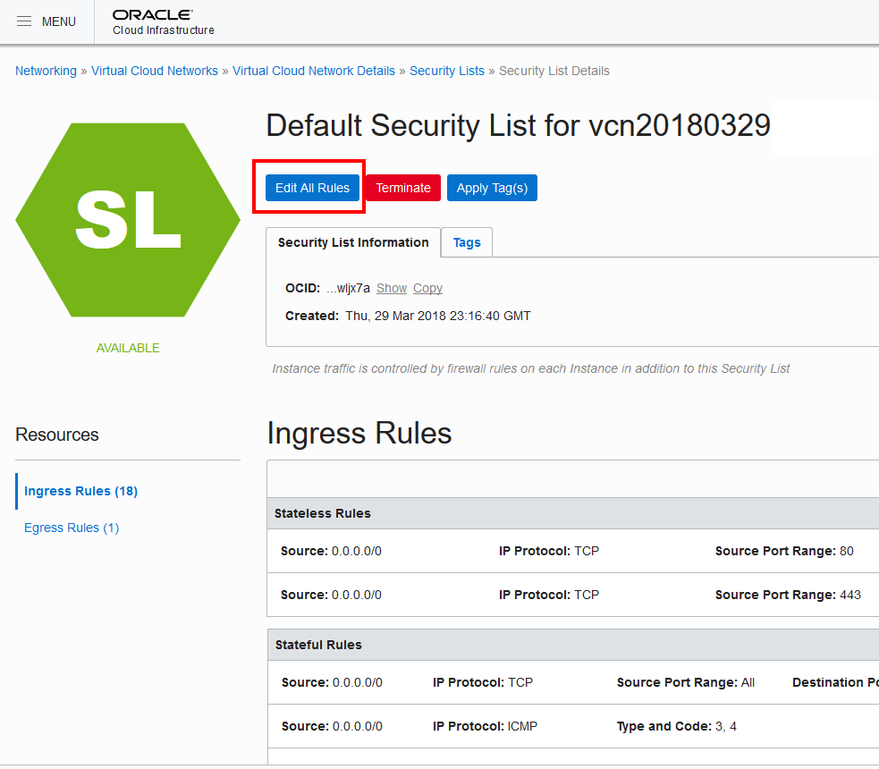
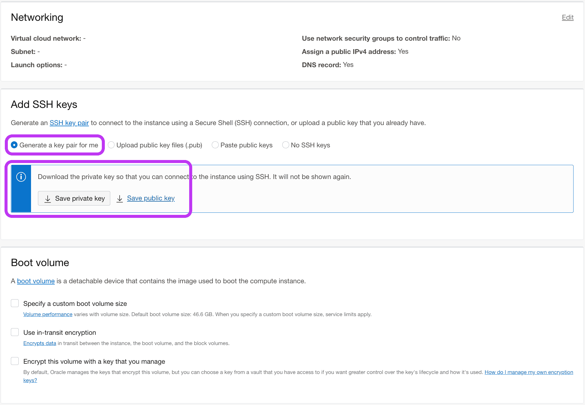
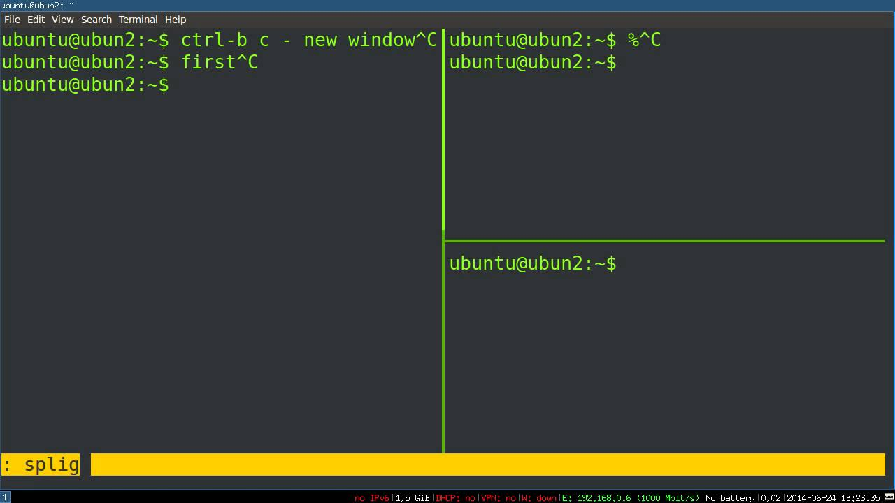

📑 الفهرس
- قبل ما نبدأ - المتطلبات
- إنشاء حساب Oracle Cloud
- اختيار الـ Home Region (مهم!)
- إضافة بطاقة الائتمان (للتحقق فقط)
- إنشاء VM Instance جديد
- اختيار شكل الـ Ampere ARM (4 cores/24GB)
- توليد SSH Key
- إعدادات الشبكة والـ Ports
- الاتصال بالـ VPS بـ SSH
- تثبيت البوت وتشغيله
- تشغيل تلقائي بعد الإعادة (systemd)
- مشاكل شائعة وحلولها
1️⃣ قبل ما نبدأ - المتطلبات
قبل ما تروح تسجل في Oracle Cloud، اتأكد إنك عندك الحاجات دي:
- إيميل جديد - يفضل تعمل إيميل جديد مخصوص للبوت (Gmail أو Outlook)
- بطاقة ائتمان أو debit card - Oracle بيتحقق منها بمبلغ صغير ($1) ويرجعه. مش هيتخصم أي حاجة.
- رقم موبايل - للتحقق بـ SMS
- VPN (موصى به) - لو في مصر، يفضل تستخدم VPN (US أو UK) علشان التسجيل يعد بسهولة
ملاحظة مهمة عن البطاقة البنكية: Oracle بيتخصص مبلغ $1 مؤقت للتحقق من البطاقة، وبعدها بيرجعه في خلال 7 أيام. مش هتتخصم أي رسوم شهرية ما دمت داخل الـ Always Free tier.
لو معندكش بطاقة ائتمان، تقدر تستخدم Revolut أو N26 أو Wise - دول بيدوك بطاقة virtual مجانية ومناسبة للتسجيل.
2️⃣ إنشاء حساب Oracle Cloud
1
افتح صفحة التسجيل
ادخل على الرابط ده:
https://www.oracle.com/cloud/free/
دوس على زرار "Start for free" فوق على اليمين.

صفحة Oracle Cloud Free Tier - دوس "Start for free"
2
املأ بياناتك الأساسية
هتلاقي فورم تسجيل فيه الحاجات دي:
- Country: اختر بلدك (مثلاً Egypt أو United States لو بتستخدم VPN)
- Name: الاسم الكامل (يفضل زي اللي في البطاقة)
- Email: الإيميل الجديد
- Password: باسورد قوي (حروف + أرقام + رموز)
- Company Name: اختياري، اكتب أي حاجة
اختر Cloud Account Type = "Individual" مش Enterprise - علشان تقدر تستخدم الـ Free Tier.
3
تحقق من الإيميل
هيوصلك إيميل من Oracle فيه كود تحقق. انسخ الكود وحطه في الصفحة.
لو مريتش الإيميل في الـ Spam/Junk بعد دقيقة.
3️⃣ اختيار الـ Home Region (مهم جداً!)
ده أهم قرار في التسجيل كله. الـ Home Region هو المكان اللي VM هيكون موجود فيه، ومش هتقدر تغيره بعد كده.

صفحة اختيار الـ Home Region
مهم جداً: اختار region فيه
Ampere A1 instances متاحة (4 cores/24GB RAM مجانية).
المناطق الموصى بها:
- 🇺🇸 US East (Ashburn) - الأفضل والأكثر توفر
- 🇺🇸 US West (San Jose) - ممتاز كمان
- 🇩🇪 EU Frankfurt - أقرب للشرق الأوسط
- 🇬🇧 UK South (London) - كويس
تجنب المناطق الصغيرة (مثل Dubai, Mumbai, Singapore) - مش دايماً فيها Ampere متاح.
لو سجلت في region وطلع مفيش Ampere متاح، تقدر تعمل account تاني بإيميل تاني في region تاني. علشان كده اختار صح من الأول!
4️⃣ إضافة بطاقة الائتمان (للتحقق فقط)
هتدخل على صفحة إضافة البطاقة. Oracle محتاج البطاقة علشان يتأكد إنك شخص حقيقي، مش روبوت.

صفحة إدخال بيانات البطاقة
1
أدخل بيانات البطاقة
- Card Number: رقم البطاقة (16 رقم)
- Name on Card: الاسم زي ما هو مكتوب على البطاقة
- Expiry Date: MM/YY
- CVV: الـ 3 أرقام من ورا
- Billing Address: عنوان زي اللي في كشف الحساب
2
تحقق من البطاقة
Oracle هيتخصص مبلغ صغير (حوالي $1) من البطاقة ويرجعه في 7 أيام. ده مجرد تحقق.
ممكن كمان يطلب منك ترفع صورة البطاقة أو إثبات عنوان - ده طبيعي لو الـ fraud detection لقى أي حاجة مش مظبوطة.
مشاكل شائعة مع البطاقة:
- لو البطاقة مصرية، ممكن ترفضها من أول مرة. جرّب بطاقة تانية أو VPN.
- لو معندكش بطاقة، استخدم Wise Virtual Card (مجاني)
- متستخدمش بطاقة وهمية أو generated - هتتعرض الـ account
3
تحقق من الموبايل
هيوصلك SMS بكود تحقق على رقم الموبايل. أدخله وخلص التسجيل.
بعد كده هيظهرلك رسالة "Account is being provisioned" - الانتظار ممكن يوصل لـ 30 دقيقة (وأحياناً ساعات).
لو الـ account لسه pending بعد 24 ساعة، افتح ticket من support: https://support.oracle.com
5️⃣ إنشاء VM Instance جديد
بعد ما الـ account يتفعل، سجل دخول على Oracle Cloud:
https://cloud.oracle.com
1
افتح Compute → Instances
من القائمة على اليسار (أو اليمين في RTL):
- دوس على ☰ Menu فوق على اليسار
- اختر Compute → Instances
- دوس زرار "Create Instance"

صفحة إنشاء instance جديد
2
سمّي الـ instance
اكتب اسم واضح زي whale-bot-vps
3
اختر الـ Image (Ubuntu)
دوس على Edit في قسم Image and Shape:
- Image: Canonical Ubuntu 22.04 (أو 24.04)
- متغير الـ image build اللي هو "Always free eligible"
6️⃣ اختيار شكل الـ Ampere ARM (4 cores/24GB RAM)
الخطوة دي أهم خطوة - هنا بتاخد الخصم المجاني الكامل.
1
دوس Edit في قسم Shape
هتلاقي قائمة الـ shapes. دور على:
Ampere → VM.Standard.A1.Flex

اختيار Ampere A1 Flex shape
2
اضبط المواصفات
بعد ما تختار VM.Standard.A1.Flex، هتلاقي سلايدر للـ cores والـ RAM:
- Number of OCPUs: 4 (أقصى حد مجاني)
- Amount of Memory (GB): 24 (أقصى حد مجاني)
الـ Always Free tier بيدّيك إجمالي 4 OCPUs و 24GB RAM للـ Ampere ARM.
تقدر تعمل VM واحد بكل الموارد، أو 2 بـ 2 cores/12GB لكل واحد.
للبوت بتاعنا، VM واحد بكل الموارد كافي جداً.
لو مفيش Ampere متاح هيظهرلك رسالة "Out of capacity in your region".
الحلول:
- جرّب في وقت تاني (ليلاً مثلاً)
- غيّر الـ Availability Domain
- لو مستعجل، ابدأ بـ VM.Standard.E2.1.Micro (1GB RAM) - مجاني لكن ضعيف
- طول بالك، Ampere بيتحرر كل شوية
7️⃣ توليد SSH Key
علشان تتصل بالـ VPS، محتاج SSH Key. ده مفتاحين: private (عندك) و public (على الـ VPS).
1
نزل Oracle Cloud SSH Key Generator
في صفحة إنشاء الـ instance، انزل تحت لـ "Add SSH keys":
- اختر "Generate a key pair"
- دوس "Save Private Key" - هينزل ملف
ssh-key-YYYY.key
- دوس "Save Public Key" - هينزل ملف
ssh-key-YYYY.pub

توليد وحفظ SSH keys
احتفظ بـ private key في مكان آمن! ده زي كلمة السر بتاعتك للـ VPS.
لو ضاع، مش هتقدر تدخل تاني. متشاركوش مع حد ومترفعهوش على GitHub.
بدل ما تولّد key من Oracle، تقدر تولّد واحدة بنفسك بـ PuTTYgen (Windows) أو ssh-keygen (Linux/Mac)
وترفع الـ public key في خانة "Save public key".
2
خلي VCN الافتراضي
Oracle هيعملك Virtual Cloud Network (VCN) تلقائي. خلي الافتراضي - فيه ports الـ SSH (22) مفتوحة.
3
دوس Create
دوس "Create" في آخر الصفحة. الـ instance هيبدأ ينشأ في خلال 1-3 دقايق.
بعد ما يبقى جاهز، هيظهرلك Public IP Address - انسخه، هتحتاجه.
8️⃣ إعدادات الشبكة والـ Ports (اختياري)
البوت مش محتاج أي port مفتوح (كل الـ notifications بتطلع من البوت لـ Telegram). بس لو حابب تفتح port للـ HTTP أو monitoring، اعمل الآتي:

VCN Security List - إضافة Ingress Rules
1
افتح VCN Security List
- Menu → Networking → Virtual Cloud Networks
- دوس على الـ VCN بتاعتك
- دوس على Security Lists → Default Security List
- دوس "Add Ingress Rules"
2
أضف الـ ports اللي محتاجها
للبوت، مش محتاج تفتح أي حاجة. الـ SSH (port 22) مفتوح افتراضياً.
لو حابب تفتح HTTP (80) و HTTPS (443) لو حابب تضيف web interface:
Source CIDR: 0.0.0.0/0
IP Protocol: TCP
Destination Port Range: 80,443
Description: HTTP/HTTPS access
9️⃣ الاتصال بالـ VPS بـ SSH
على Linux / Mac / Windows 10+
1
افتح Terminal
عدّل صلاحيات الـ private key (لو مش عامل):
chmod 400 ~/Downloads/ssh-key-XXXX.key
2
اتصل بالـ VPS
الـ username الافتراضي على Ubuntu هو ubuntu:
ssh -i ~/Downloads/ssh-key-XXXX.key ubuntu@YOUR_PUBLIC_IP
مثال:
ssh -i ~/Downloads/ssh-key-2026.key ubuntu@129.154.55.100
أول مرة هيطلب منك تأكيد - اكتب yes واضغط Enter.

الاتصال بـ SSH - أول مرة
على Windows (PuTTY)
1
حول الـ key بصيغة PuTTY
- نزل PuTTYgen من
https://www.puttygen.com
- افتح PuTTYgen → Conversions → Import Key
- اختر ملف الـ private key اللي نزلته
- دوس "Save private key" → احفظه بـ .ppk
2
افتح PuTTY واتصل
- Host Name:
ubuntu@YOUR_PUBLIC_IP
- Port: 22
- Category → Connection → SSH → Auth → Browse → اختر الـ .ppk
- دوس Open
🔟 تثبيت البوت وتشغيله
1
حدّث النظام وثبّت Python
sudo apt update
sudo apt install -y python3 python3-pip python3-venv git tmux
2
انقل ملفات البوت للـ VPS
في Terminal على جهازك (موصل بالإنتيرنيت):
# من جهازك - ارفع الملفات للـ VPS
scp -i ~/Downloads/ssh-key-XXXX.key \
bot.py whales.py requirements.txt .env \
ubuntu@YOUR_PUBLIC_IP:/home/ubuntu/
# أو لو رفعت المشروع على GitHub
ssh -i ~/Downloads/ssh-key-XXXX.key ubuntu@YOUR_PUBLIC_IP
# ثم على الـ VPS:
git clone https://github.com/USERNAME/whale-bot.git
cd whale-bot
3
اعمل Virtual Environment
cd /home/ubuntu/whale-bot # أو المسار اللي رفعت فيه الملفات
python3 -m venv venv
source venv/bin/activate
pip install -r requirements.txt
4
املأ .env بالقيم الصحيحة
nano .env
تأكد إن فيه:
TELEGRAM_BOT_TOKEN=8688639320:AAHw_CthYwmNDBcYwKnuIbT_MOSAxLrkcCM
TELEGRAM_CHAT_ID=123456789
HELIUS_API_KEY=your_helius_key_here
MIN_BUY_USD=500
POLL_SECONDS=30
للحفظ: Ctrl+O ثم Enter، للخروج: Ctrl+X
5
شغّل البوت بـ tmux (يفضل شغال بعد القفل)
tmux new -s whale
python bot.py

البوت شغال في tmux session
هتلاقي رسالة على Telegram بتأكد إن البوت اشتغل ✅
6
اخرج من tmux بدون ما تقفل البوت
اضغط الترتيب ده:
Ctrl+B ثم اتركهم واضغط D
هتطلع للـ shell العادي، والبوت يفضل شغال في الـ background.
للرجوع للـ tmux:
tmux attach -t whale
للرجوع والقفل:
tmux kill-session -t whale
1️⃣1️⃣ تشغيل تلقائي بعد الإعادة (systemd)
علشان البوت يشتغل تلقائياً بعد ما الـ VPS يعمل reboot أو update:
1
اعمل systemd service file
sudo nano /etc/systemd/system/whale-bot.service
2
اكتب المحتوى ده
[Unit]
Description=Whale Tracker Bot
After=network.target
[Service]
Type=simple
User=ubuntu
WorkingDirectory=/home/ubuntu/whale-bot
ExecStart=/home/ubuntu/whale-bot/venv/bin/python bot.py
Restart=always
RestartSec=10
StandardOutput=append:/var/log/whale-bot.log
StandardError=append:/var/log/whale-bot.log
[Install]
WantedBy=multi-user.target
3
فعّل وشغّل الخدمة
sudo systemctl daemon-reload
sudo systemctl enable whale-bot
sudo systemctl start whale-bot
sudo systemctl status whale-bot
تأكد إن status = "active (running)".
4
راجع الـ logs لو فيه مشاكل
# logs live
sudo journalctl -u whale-bot -f
# أو لو عامل log file
sudo tail -f /var/log/whale-bot.log
دلوقتي البوت هيشتغل تلقائياً بعد كل reboot. حتى لو الـ VPS وقع، systemd هيرجعه في خلال 10 ثواني.
1️⃣2️⃣ مشاكل شائعة وحلولها
المشكلة 1: "Out of capacity" لما تختار Ampere
السبب: Oracle بتوفر Ampere instances بكميات محدودة في كل region.
الحل:
- جرّب تاني بعد ساعة أو يوم
- غيّر الـ Availability Domain (AD-1, AD-2, AD-3)
- ابدأ بـ VM.Standard.E2.1.Micro (1GB) مؤقتاً
- اعمل script يحاول كل دقيقة (لو مستعجل)
المشكلة 2: SSH connection refused
الحل:
- تأكد إن البورت 22 مفتوح في Security List
- تأكد إنك بتستخدم الـ private key الصح
- تأكد إن الـ username
ubuntu (مش root)
- تأكد إن الـ instance شغال (status = Running)
المشكلة 3: البوت بطل يبعت إشعارات
الحل:
# شوف الـ logs
sudo journalctl -u whale-bot -n 50
# لو فيه error في Helius API
# - تأكد إن HELIUS_API_KEY مظبوط في .env
# - تأكد إنك مش جاوزت الـ rate limit
# لو فيه error في Telegram
# - تأكد إن TELEGRAM_CHAT_ID مظبوط
# - تأكد إن البوت مش blocked من Telegram
# ريستارت البوت
sudo systemctl restart whale-bot
المشكلة 4: Account pending أكتر من 24 ساعة
الحل:
- افتح support ticket:
https://support.oracle.com
- موضوع الـ ticket: "Free Tier account pending for over 24 hours"
- عادةً بيتحل في 1-3 أيام
المشكلة 5: البطاقة اترفضت
الحل:
- جرّب بطاقة تانية
- استخدم Wise/Revolut virtual card
- اتصل بالبنك بتاعك علشان يشيل block على المعاملات الدولية
- لو من مصر، جرّب VPN (US/UK)
المشكلة 6: VPS فيه لاج عالي
الحل:
# شوف استهلاك الموارد
top
df -h
free -h
# لو الـ RAM ممتلئ
sudo fallocate -l 4G /swapfile
sudo chmod 600 /swapfile
sudo mkswap /swapfile
sudo swapon /swapfile
🎉 مبروك!
البوت شغال 24/7 على Oracle Cloud المجاني
دلوقتي هتوصلك إشعارات فورية لما أي حوت يشتري meme coin على Solana 🐋
لو عندك أي مشكلة، ارجع لقسم "مشاكل شائعة" أو كلمني على Telegram